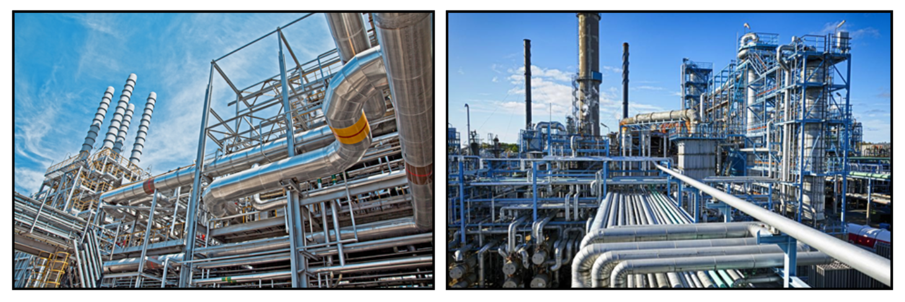
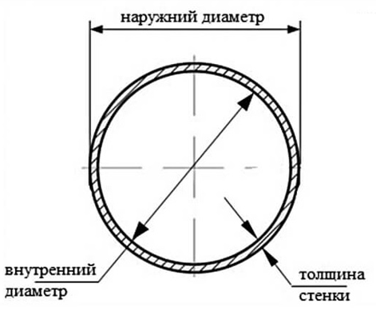
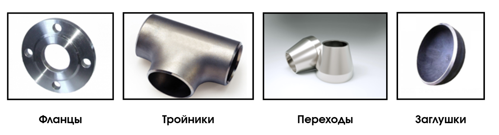
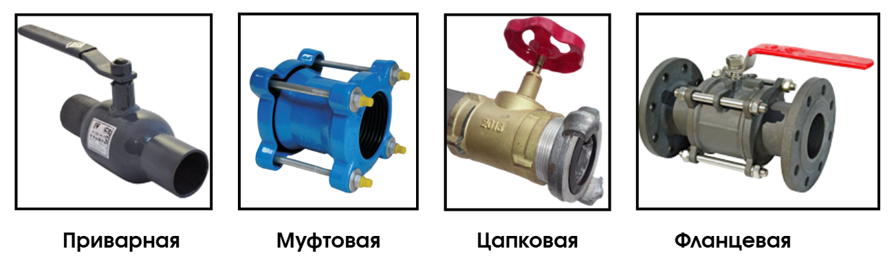
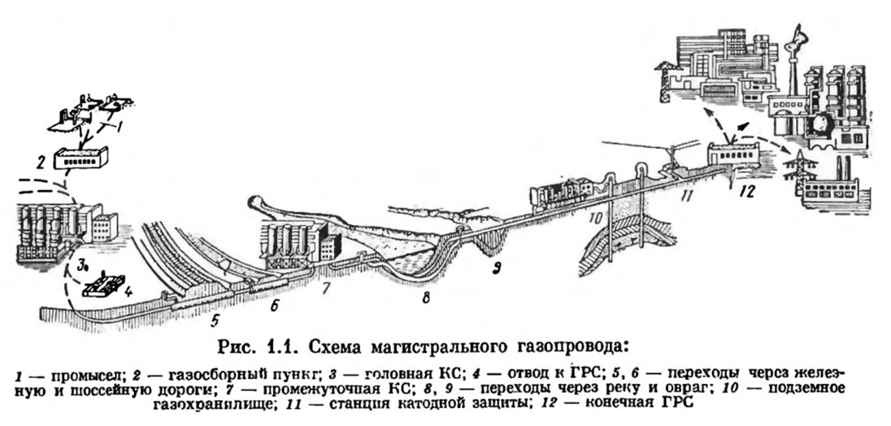
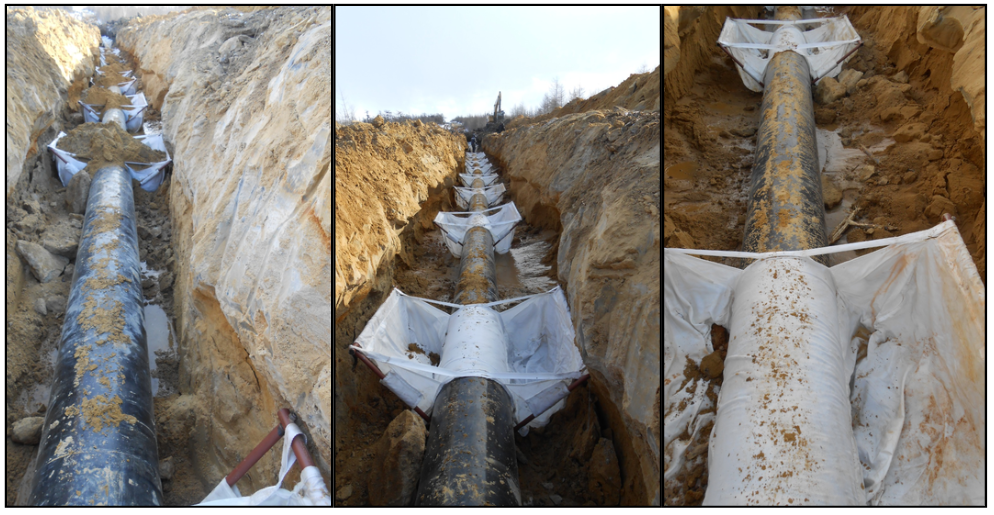
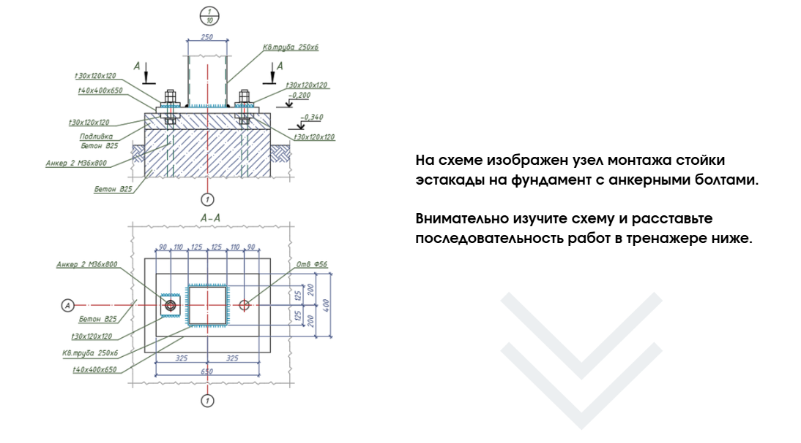

Общие сведения о разделах ТХ и ТКР

Ежедневно наша жизнь не обходится без трубопроводов водоснабжения, теплоснабжения и канализации. Но понятие технологических и магистральных трубопроводов вызывает наибольшие трудности, поскольку это довольно специфическое строительство.
На этом уроке подробно разберем общие сведения о разделах ТХ и ТКР.
Технологические трубопроводы
Технологические трубопроводы – это системы, которые используются для перемещения веществ и жидкостей на промышленных предприятиях для беспрерывного производственного процесса. Это могут быть сырье, полуфабрикаты, готовая продукция, жидкости, газы, пар, топливо и многие другие.
На промышленных предприятиях это выглядит так:

Нормативные документы:
- ГОСТ 32569-2013 «Трубопроводы технологические стальные. Требования к устройству и эксплуатации на взрывопожароопасных и химически опасных производствах»
- Приказ от 21 декабря 2021 г. № 444 «Правила безопасной эксплуатации технологических трубопроводов»
- СП 75.13330.2011 «Технологическое оборудование и технологические трубопроводы»
Технологические трубопроводы можно разделить по нескольким видам:
- По способу прокладки: подземные, наземные, плавающие, подводные.
- По классу опасности среды: группы А (токсичные веществ), Б (взрывоопасные вещества. пожароопасные вещества), В (трудногорючие и негорючие вещества).
- По показателям давления и температуры выделяют пять категорий – I, II, III, IV, V.
Основным элементом является труба. Ее основные параметры – это длина, толщина, внутренний и наружный диаметры.

Материал для прокладки технологических трубопроводов применяется самый разнообразный:
- Металлический трубопроводы (сталь, чугун, нержавеющая сталь, медь)
- Полимерные трубопроводы (полиэтилен, полипропилен, поливинилхлорид, поливинилиденфторидные)
- Композитные трубопроводы (металлопластик, стекловолокно)
- Бетонные (бетон, железобетон, асбестоцемент)
Помимо труб, конструкция состоит из соединительных и иных деталей:

Еще одним важным элементом является арматура:

В зависимости от назначения арматура разделяется на следующие виды:
- регулирующую (отслеживает параметры транспортируемых веществ и меняет их в случае необходимости);
- запорную (служит для остановки транспортируемых веществ);
- предохранительную (регулирует давление и не допускает его превышения или понижения)
Из этого можно сделать вывод, что технологический трубопровод представляет собой сложную составную систему, при правильном проектировании, строительстве и эксплуатации которой технологический процесс будет беспрерывным.
Магистральные трубопроводы
Магистральные трубопроводы – это многосоставные конструкции, которые транспортируют минеральное сырье из места его добычи до пункта конечного потребления.
Трубопроводы прокладывают для передачи веществ в твердом, жидком, газообразном состоянии на дальние расстояния. В первую очередь линии строят для транспортировки сред, которые опасно и затратно перевозить железнодорожным или водным транспортом (например, нефтепродукты, углеродные сжиженные газы, природные газы).
Конечно же, передача сырья не проходит от изначального промысла до потребителя напрямую, магистральные трубопроводы проходят большой этап при транспортировке.

Нормативные документы:
СП 86.13330.2014 Магистральные трубопроводы.
ГОСТ Р 51164-98 «Трубопроводы стальные магистральные. Общие требования к защите от коррозии»
ГОСТ 31448-2012 «Трубы стальные с защитными наружными покрытиями для магистральных газонефтепроводов. Технические условия»
ГОСТ 34182-2017 «Магистральный трубопроводный транспорт нефти и нефтепродуктов. Эксплуатация и техническое обслуживание. Основные положения»
Приказ Ростехнадзора от 11.12.2020 №517 «Правила безопасности для опасных производственных объектов магистральных трубопроводов»
Магистральные трубопроводы можно разделить на следующие виды:
По способу монтажа: наземные (трубопровод прокладывают на подготовленные опоры подготовленные опоры), подземные (укладываются в траншею), подводные (трубопровод фиксируют ниже поверхности воды с помощью балластов).

Подземный способ прокладки применяют для магистральных нефте- и газо- проводов, они работают под высоким давлением, поэтому их не размещают через населенные пункты, морские порты, ж/д мосты и т.п.
В зависимости от типа транспортируемого сырья магистральные трубопроводы можно разделить по следующим видам:
- нефтепроводы;
- газопроводы;
- водопроводы.
- теплопроводы;
- паропроводы;
- продуктопроводы (бензопроводы; керосинопроводы; мазутопроводы и многие другие, т.е. готовую продукцию).
Проектирование и прокладку трасс (расстояние до населенных пунктов, глубину размещения линии, подбор материала трубы, необходимую арматуру) производят по действующим стандартам.
Магистральные трубопроводы прокладывают одиночным методом или в техническом коридоре, т.е. прокладку ведут параллельно с другими трубопроводами.
Процесс монтажа состоит из следующих этапов:
- доставка и разгрузка труб (прокат доставляют на специальных автомобилях-длинномерах);
- укладка деталей в подготовленные траншеи/канавы;
- сварка в траншее (или на бровке с последующей укладкой трубоукладчиками;
- испытания;
- изоляция стыков (выполняется только после гидравлического испытания коммуникации).
Магистральный трубопровод – это довольно ответственный вид строительства, к нему относят большое количество требований при монтаже и сдаче документации.
Теперь немного попрактикуемся.

Источник и ограничения: для просмотра требуется сеть и доступ к внешней площадке.
В следующем уроке разберем основные акты, которые требуются для сдачи исполнительной документации.
{kind=link}
{kind=link}
{kind=link}
{kind=link}
{kind=link}
{kind=link}
{kind=link}